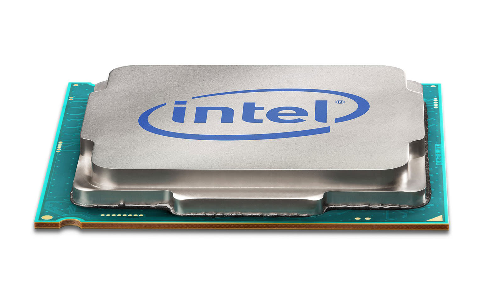
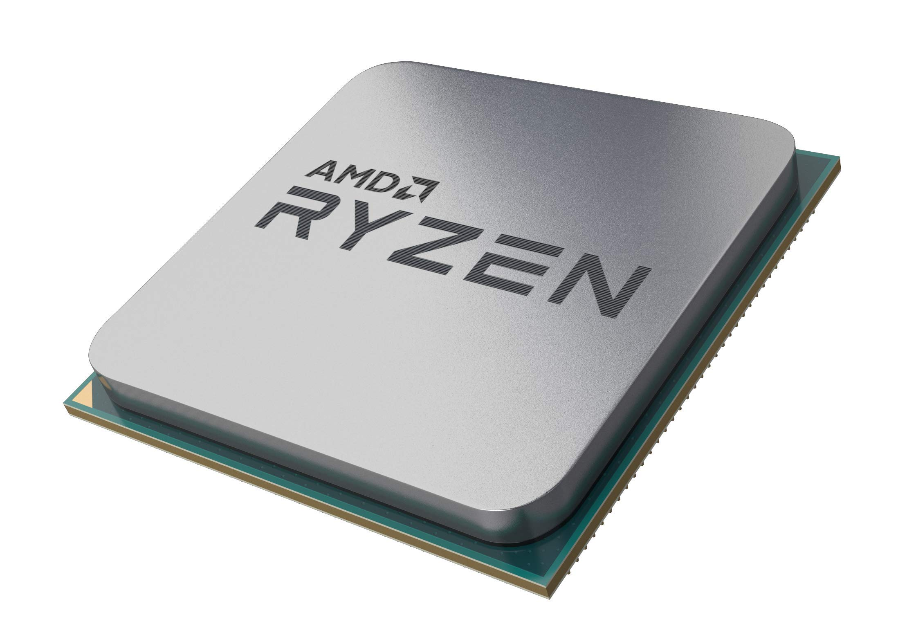

Computer Components
At ByteMarket, we break down the essential computer components you need for building or upgrading your PC. Whether you're gaming, streaming, or working, choosing the right hardware matters.
CPUs
The CPU (Central Processing Unit) is the brain of your computer. It handles all the instructions from your software and tells other parts what to do. A faster CPU means better overall performance especially for multitasking, gaming, and streaming at the same time.
- Clock speed measured in GHz — higher is generally faster
- More cores help with multitasking and heavy workloads
- Two main brands: Intel and AMD (Ryzen)
GPUs
The GPU (Graphics Processing Unit) handles all the visual output on your screen. It's the most important part for gaming, video editing, and 3D rendering. A stronger GPU means higher frame rates and better visual quality.
- VRAM (video memory) determines how much graphical data it can handle
- Two main brands: NVIDIA and AMD
- Match your GPU to your monitor resolution for best performance
RAM
RAM (Random Access Memory) is your computer's short-term memory. It stores data that your CPU is actively using so it can be accessed quickly. More RAM means your system can handle more tasks at once without slowing down.
- 16GB is the sweet spot for most gaming and everyday use
- 32GB recommended for content creation and heavy multitasking
- DDR5 is the latest standard — faster and more efficient than DDR4
Storage
Storage is where all your files, games, and the operating system live. SSDs are much faster than old hard drives and make a big difference in how quickly your PC boots and loads games.
- NVMe SSDs are the fastest option available
- 500GB is a minimum — 1TB recommended for gaming
- Consider a secondary drive for extra storage space
Motherboards
The motherboard connects all your components together. It determines what CPUs, RAM, and storage you can use, so it's important to choose one that's compatible with the rest of your build.
- Make sure the socket matches your CPU brand and generation
- Check how many RAM slots and M.2 slots it has
- ATX is the standard size — Micro-ATX and Mini-ITX are smaller options
Intel vs AMD Ryzen
Choosing between Intel and AMD is one of the most common decisions when building a PC. Both make great processors, but they work best with different chipsets and platforms.

Intel
Intel CPUs pair best with Intel chipset motherboards (like Z790 or B760). Intel's platform is known for strong single-core performance which is great for gaming. Intel also uses its own socket type (LGA), so the CPU and motherboard must both be Intel.
- Best chipsets: Z790 (high-end), B760 (mid-range)
- Strong gaming performance
- Works best with DDR5 RAM on newer generations

AMD Ryzen
AMD Ryzen CPUs use AMD's AM5 socket and work with AMD chipset motherboards (like X670 or B650). Ryzen is known for great multi-core performance which makes it excellent for streaming, video editing, and productivity alongside gaming.
- Best chipsets: X670E (high-end), B650 (mid-range)
- Great multi-core and productivity performance
- AM5 platform supports DDR5 and has a long upgrade path
Note: Intel and AMD CPUs are not cross-compatible. An Intel CPU requires an Intel motherboard, and an AMD Ryzen CPU requires an AMD motherboard. Always make sure your CPU and motherboard use the same socket and chipset generation.